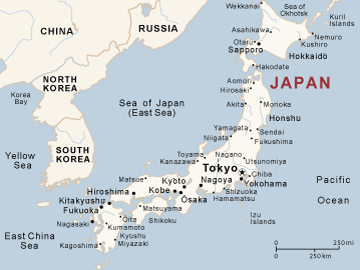

1. Markup validation
A German Shepherd
2. The main element
Main is being used in the element below, WAI-ARIA, and can only be used once in a page
3. WAI-ARIA
Main title
This is the content of this section
4. The small element
This image is not owned by this user
5. Subheadings
Main title
This is a subtitle
This is the content of this section
6. Images and accessibility
7. The time element
The assigned dates to finish this assignment are:
-
8. meter and progress
Website viewed:
9. The longdesc attribute

Please right-click, and click 'view description' to view the longdesc page
10. The mark element
You have come to the end of this webpage. Congratulations This is one last code example. We highlight important text!
For program diagram, click HERE